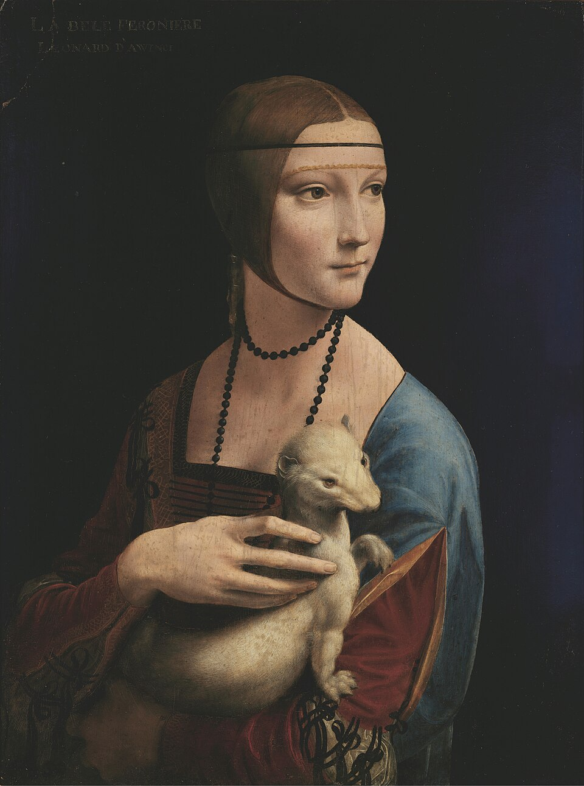
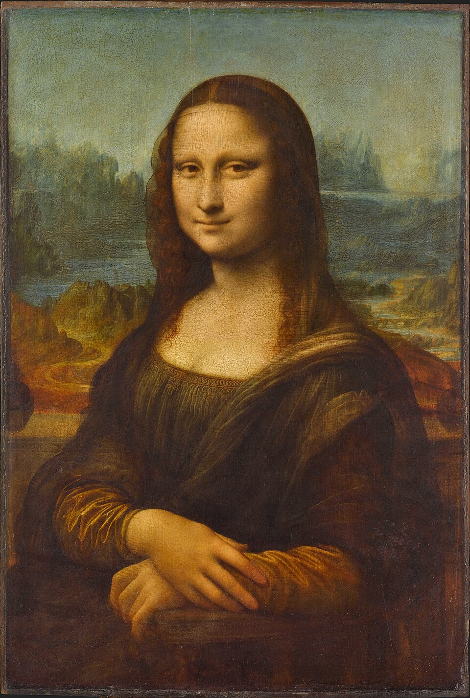

Artworks
Three defining paintings from the brush of a genius
Leonardo produced relatively few finished paintings, but each one is truly magnificent. His paintings utilize sfumato (the smoky blending of tones to suggest depth and atmosphere) and his interest in the inner life of his subjects, as described by Carmen Bambach and other art historians. Below are a few of his inventive works.
Click on the pictures to explore them in 3D through the novel technology of Guassian Splatting!

Lady with an Ermine
This portrait of Cecilia Gallerani is incredible for its detial. The work's delicate handling of light and shadow reveals Leonardo's deep study of optics and anatomy.

The Last Supper
Painted on the wall of Santa Maria delle Grazie in Milan, The Last Supper captures the moment after Christ announces that one of his disciples will betray him. Leonardo arranged the twelve apostles in four groups of three, each responding with different levels of emotion and it remains a compositional masterpiece.

Mona Lisa
Housed in the Louvre in Paris, the Mona Lisa is arguably the most famous painting in the world. Lisa, wife of Francesco del Giocondo, gazes with a mysterious half-smile, and is caputred enchantedly by Leonardo's sfumato technique.
"Painting is poetry that is seen rather than felt, and poetry is painting that is felt rather than seen."
— Leonardo da VinciLeonardo's paintings exclaim his dedication to understanding the world around him. The detail, scientific precision, and inventive art techniques elevate his paintings to be extraordinary marvels.